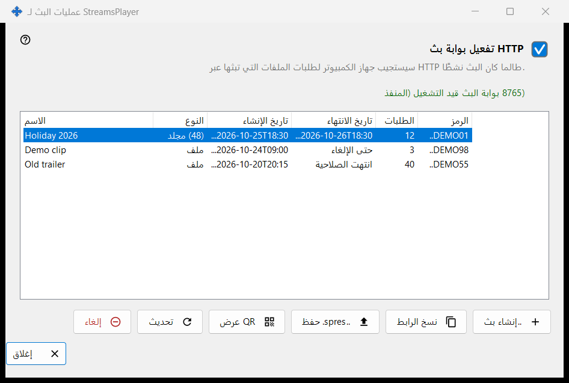
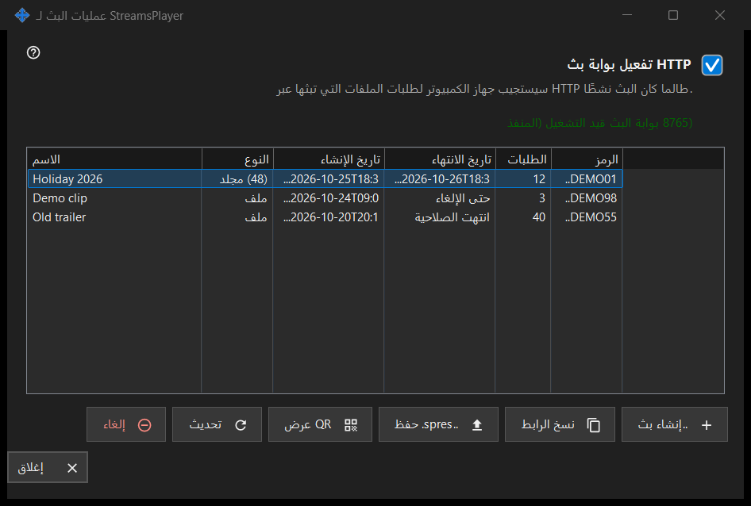

StreamsPlayer عمليات البث لـ
الغرض من هذه النافذة
تدير عمليات بث HTTP لملفات الوسائط والمجلدات التي يعرضها هذا الكمبيوتر لتطبيق StreamsPlayer. تُفتح من الزر أو من عنصر قائمة الإضافة ..عمليات البث في النافذة الرئيسية لـ Share Manager، ولا يظهران إلا عندما تُبلغ خدمة المشاركة عن دعم البث. وعند التشغيل بمسار تُفتح النافذة وتنتقل مباشرة إلى مربع حوار إنشاء بث لذلك المسار.


بهذا الترتيب
- حدّد الخيار HTTP تفعيل بوابة بث، أو أنشئ بثًا فقط فتُشغَّل البوابة.
- اضغط ..إنشاء بث، واختر ملف الوسائط، وحدّد العنوان ومدة الصلاحية وخيار الإنترنت، ثم اضغط بث.
- يُنسخ الرابط إلى الحافظة.
- حدّد صفًا واستخدم نسخ الرابط أو ..spres. حفظ أو QR عرض لتسليم البث إلى جهاز.
- اضغط إلغاء على بث لم تعد تحتاج إليه.
عناصر النافذة
مفتاح البوابة
يشغّل مربع الاختيار بوابة HTTP أو يوقفها. يعرض السطر الذي تحته بوابة البث معطلة أو بوابة البث قيد التشغيل (المنفذ N). وطالما كانت البوابة تعمل يستجيب هذا الكمبيوتر لطلبات HTTP الخاصة بملفات البث. وإن تعذّر بدء تشغيل البوابة (المنفذ أو جدار الحماية) يعود مربع الاختيار إلى حالته الحقيقية ويظهر السبب في سطر أحمر واحد تحته؛ ولا يفتح الرفض أي مربع حوار.
قائمة عمليات البث
الأعمدة: الاسم، والنوع (ملف، أو المجلد مع عدد عناصره)، وتاريخ الإنشاء، وتاريخ الانتهاء (تاريخ، أو حتى الإلغاء، أو انتهت الصلاحية)، والطلبات، والرمز الذي لا يظهر منه سوى أول ستة أحرف. تعيد القائمة قراءة نفسها كل 5 ثوانٍ. والنقر المزدوج على صف ينسخ رابطه.
..إنشاء بث
تطلب ملف وسائط وتفتح مربع حوار إنشاء بث. بعد قبوله تُشغَّل البوابة إذا لزم الأمر، ويُنشأ البث، ويُنسخ رابطه إلى الحافظة مع علامات الخصوصية؛ وتؤكد رسالة عملية النسخ.
تحديث وإلغاء
يتوفر الزر تحديث لبث مجلد فقط، ويطلب من الخدمة تحديثه؛ وتؤكد رسالة ذلك. أما الزر إلغاء فيعمل على أي صف ويسأل أولًا: هل تريد إلغاء البث X؟ سيتوقف الرابط عن العمل فورًا. لا يمكن استعادة بث أُلغي؛ أنشئ بثًا جديدًا.
عند تعطل الصفحة
إذا لم تستجب خدمة المشاركة أو لم تدعم البث، تتعطل الصفحة في مكانها ويذكر السطر الأحمر السبب، مثل أن إصدار خدمة البث هذا قديم، أو أن الإجراء لم يكتمل مع وجود التفاصيل في السجل.